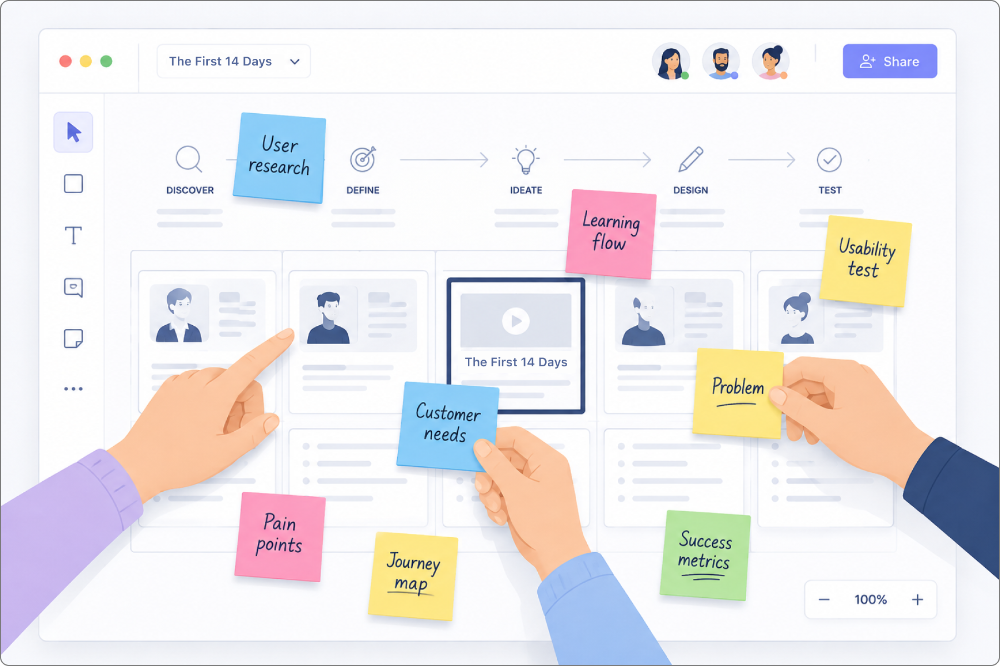
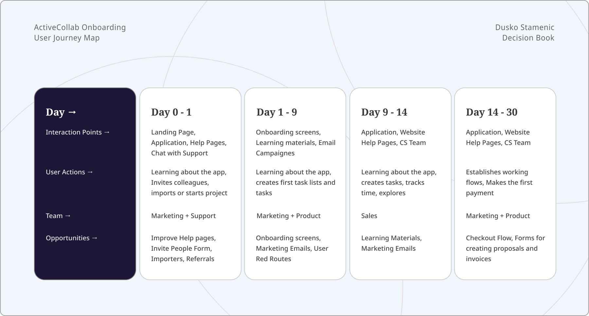
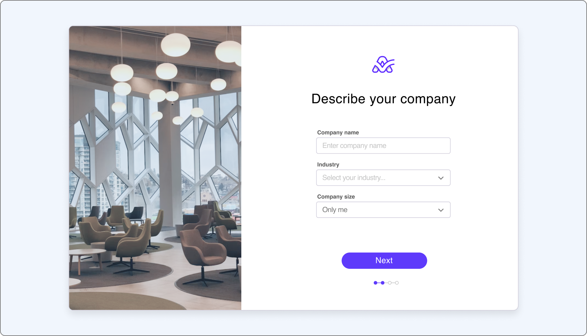
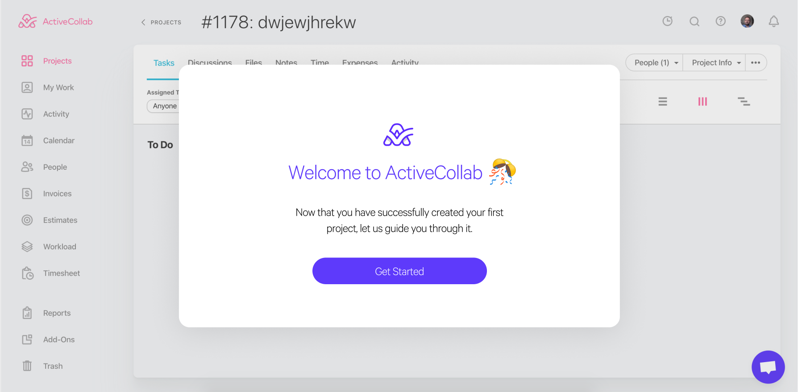
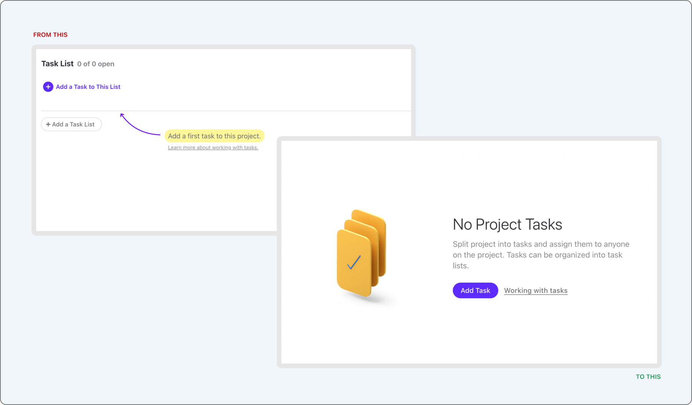
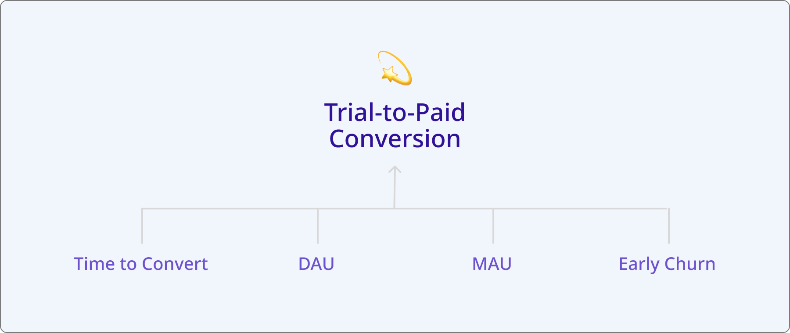
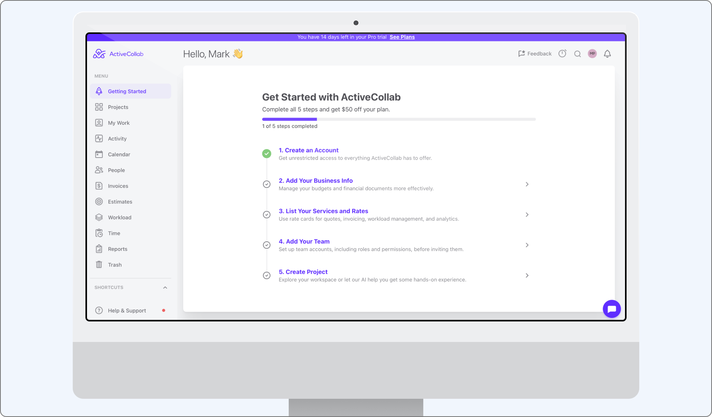

When I picked up the onboarding project, ActiveCollab's trial had a thirty-day runway and nothing built into it to spend that time well. A new sign-up landed straight in an empty task list — the same screen a longtime user would see after clearing their to-do list, except this was the very first thing anyone encountered. There was no welcome moment, no cue for where to start, and nothing connecting the blank workspace in front of someone to the value the product was supposed to deliver. The trial wasn't hostile, exactly. It was indifferent, and indifference has a cost you can read directly in the funnel: only 4.6% of trials converted to paid accounts, and the ones that did took more than thirty days to get there — longer than the trial itself was designed to run.

Neither number was much of a mystery once you looked at what a new user actually experienced. Nothing in that first session, or in the days after it, was doing the job an onboarding flow is supposed to do — turning curiosity into a habit, and a habit into a decision to pay. The brief that came out of this was easy to state and harder to execute: close every one of those early gaps, lift trial-to-paid conversion off its floor, and shorten the distance between sign-up and a first real sense of value.
Benchmarking the onboarding landscape
Before redesigning anything, we spent time understanding how other tools handled the same problem, mapping and recording onboarding across thirteen productivity and project-management apps to find shared patterns and the places where products diverged. What that comparison made clear was that none of the strong onboarding experiences lived in a single screen. Each one was a system: a step-by-step setup sequence inside the product, timed lifecycle emails nudging people back toward activation, lightweight tutorials and feature pointers, self-serve documentation for people who preferred to explore on their own, and, behind all of it, support agents and a sales team picking up wherever the automated parts left off. Redesigning ActiveCollab's onboarding was never going to be a matter of fixing one screen. It meant treating the whole first month as a single, connected experience.
Mapping the first month, touchpoint by touchpoint
To make that connected experience visible, we charted every interaction a new user had across marketing, product, and lifecycle emails, organized by team and by day. The picture that emerged split roughly into four phases. On day zero and one, marketing owned the moment — the campaign or blog post that brought someone in, the homepage, the first screens inside the product. From day two through day nine, ownership shifted to a joint effort between marketing and product, using lifecycle emails to pull people back toward the actions that mattered. Around day ten through thirteen, the strongest conversion signals appeared — webinar sign-ups, intent-driven emails, requests to schedule a call — and sales took the lead. By day fourteen through thirty, sales and product worked together to close the loop, sending the prompts aimed at turning a trial into a paying account.

Laying the whole month out this way did something simple but important: it showed exactly where the handoffs between teams were happening, and where a user could fall through the cracks between them.
Turning research into testable assumptions
Every design decision that followed traced back to a specific hypothesis, written from the point of view of either an account Owner or a trial user. A dedicated welcome moment for clients, so an empty task list wasn't the first thing anyone saw. Custom invite messages, so an Owner could hand a new teammate some context instead of a blank, generic invite. Two-factor authentication, so clients felt confident their data was safe from the first login. Richer sample projects, so trial users could see more of what the product could do than just the basics. The option to choose what got imported from competitor apps, so testers weren't forced to bring over every client and team member just to try the app. And a custom color scheme, so a workspace could actually look like it belonged to the organization using it, rather than a generic trial account.
None of these were guesses dressed up as strategy. Each one answered a specific question the research had raised, and each one could be tested and measured on its own.
Pre-app onboarding screens
Across the competitive set, the pre-app onboarding screens converged on a nearly identical sequence: enter your name, email, and password; describe your company; invite your team; start your first project. That convergence was itself useful information — it told us where the industry had already settled on a pattern, and where ActiveCollab had room to differ.

First contact with the product
Once someone was inside the product, the strongest onboarding flows we studied shared three moves. A welcome screen greeted new users with something warmer than a blank interface — a small, deliberate moment of delight before the real work began. A feature pointer guide used lightweight tooltips to highlight the handful of controls that actually mattered, rather than explaining everything at once. And a short introductory video, rarely longer than two or three minutes, set expectations before people started clicking around on their own. Together, the three moves did the same job a good host does at the door of a party: orient the guest, point them toward something worth doing, then get out of the way.

Retention is a psychology problem before it's a metrics problem
Every product decision either builds a habit loop or quietly breaks one, so I used the Hook Model as a lens for the redesign and then checked what it predicted against the data. New teams were signing up but stalling before they reached a core project-management workflow, because setup felt like configuration rather than progress. So we rebuilt onboarding around progressive disclosure and contextual triggers — surfacing one decision at a time, prompting the next step only when it was relevant, and routing people toward a real task as quickly as possible. What came out of it was a shorter path to a completed first task and an onboarding flow that taught the product instead of interrogating the user.
Progressive disclosure meant revealing complexity gradually, so the interface never outpaced what a new user actually understood yet. Contextual triggers meant prompting the right next step exactly when it became useful, instead of front-loading every decision. Quick wins meant getting someone to a small, visible success early, since momentum is far easier to sustain than to create. And habit loops meant designing recurring touchpoints — notifications, recaps, shared views — that pulled teams back into their daily workflow long after onboarding itself had ended.

Defining what success would look like
Two kinds of numbers mattered for this project, and it was worth being explicit about which one was the target and which were early warning signs. The direct indicator, the north star for the whole effort, was trial-to-paid conversion — the goal was to move it from 4.6% up to 6%, alongside cutting the time to convert to under twenty days. Everything else sat downstream of that: a drop in early churn and more in-app activity during the trial itself served as indirect signals that the flow was working before the conversion number had time to catch up.

Testing what we designed
Two rounds of testing shaped the flow's final form. The first was an A/B test that cut the pre-app sequence from four screens to three, removing the "invite your team" step entirely to see whether trimming friction at the door would get people into the real interface faster. We'd already identified other, better places inside the app to prompt team invites, so removing it here wasn't a loss — it just moved the moment to where it made more sense.
The second was moderated usability testing aimed at a bigger question: did people still need a guided tour once the rest of the flow had been simplified? They didn't. Session after session, people moved through the product with no hesitation and no navigation confusion. One line from those sessions stuck with the team:
"Users didn't need to be shown where things were — they already knew."
We still kept a handful of short tutorial videos in place, not to compensate for confusion, but to show off the parts of the product whose depth and interconnection wouldn't be obvious from a first look alone.
A new design system, a new onboarding

When ActiveCollab's design system went through its own refresh, onboarding was rebuilt to match it — and it kept evolving from there, shaped by whatever the usage data and user feedback turned up next. The refreshed flow nudged daily trial engagement gently upward, and trial-to-paid conversion reached the original 6% target before settling into a natural fluctuation around it. What stayed most consistent, though, wasn't a number at all — it was the qualitative feedback, which kept confirming that the product simply felt easy to move through, session after session.
A few things about this project held up well beyond the specific numbers. Simplicity turned out to be what earned users' trust to explore the product's real depth later — an easy first impression didn't hide complexity so much as it gave people permission to find it on their own terms, once they were ready. And removing friction consistently outperformed adding guidance: cutting a screen and retiring the guided tour did more for the experience than any additional instructional layer we tried, which is worth remembering whenever the instinct in a redesign is to add rather than subtract. Perceived ease mattered just as much as actual feature depth — users rated the product as simple to use even as it grew more capable underneath that surface, a reminder that how a product feels to a new user and how much it can actually do are two different design problems, and neither should be solved at the expense of the other.
Maybe the clearest lesson, though, was that onboarding is never really finished. Every time the design system changed underneath it, the first-run flow needed to be revisited and re-tested, because the promises a product makes in its first fifteen minutes have to keep pace with what the product has become.